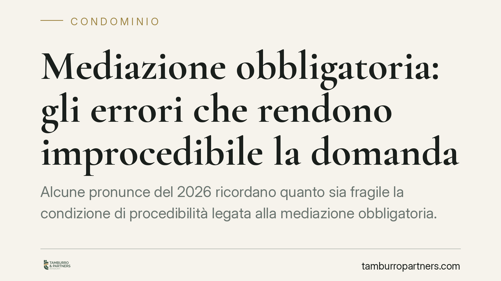

Mediazione obbligatoria: gli errori che rendono improcedibile la domanda
Alcune pronunce del 2026 ricordano quanto sia fragile la condizione di procedibilità legata alla mediazione obbligatoria. Oggetto della mediazione non coincidente con la citazione, invito ai singoli condomini anziché all'amministratore, usucapione trattata senza il preventivo tentativo: errori che costano l'improcedibilità della domanda e, nel contenzioso condominiale, la decadenza dall'impugnazione delle delibere.

Mediazione obbligatoria: il contesto
La mediazione obbligatoria è condizione di procedibilità della domanda giudiziale in una serie di materie elencate dall'art. 5, comma 1, del D.lgs. 28/2010, tra cui contratti assicurativi, bancari e finanziari, locazione, comodato, diritti reali, divisione, successioni e—per quanto qui interessa—il condominio.
L'improcedibilità non è una formalità minore. Se la mediazione manca, è irregolare o è stata svolta su un oggetto diverso da quello portato in causa, il giudice può dichiarare la domanda improcedibile. Nel contenzioso condominiale questo si intreccia con un termine perentorio: i trenta giorni per impugnare la delibera assembleare ex art. 1137 c.c. Un errore procedurale può quindi tradursi in una decadenza irreversibile.
Il disallineamento tra oggetto della mediazione e domanda
Il primo errore ricorrente è la mancata corrispondenza tra ciò che si porta in mediazione e ciò che poi si chiede al giudice. La condizione di procedibilità si considera soddisfatta solo per le domande effettivamente oggetto del tentativo di conciliazione.
Se l'istanza di mediazione verte su una questione (ad esempio l'impugnazione di una specifica delibera) e la successiva citazione amplia il petitum ad altre pretese mai mediate, la parte eccedente resta improcedibile. L'ampiezza dell'istanza, insomma, delimita l'ampiezza della futura domanda. Un'istanza redatta in modo troppo stretto o generico espone a rilievi di improcedibilità su ciò che non è stato ricompreso.
L'invito al soggetto sbagliato: amministratore o condomini?
Il secondo errore riguarda la corretta individuazione della controparte. In materia condominiale la legittimazione a stare in mediazione spetta all'amministratore, che rappresenta il condominio (art. 1131 c.c.), nei limiti dei poteri che gli derivano dall'incarico o da specifica delibera.
L'art. 71-quater disp. att. c.c. conferma che la domanda di mediazione in materia di condominio va proposta nei confronti dell'amministratore, al quale compete attivare l'assemblea per deliberare sull'adesione alla proposta. Invitare i singoli condomini, anziché l'amministratore, significa rivolgere il tentativo a soggetti privi di legittimazione: la condizione di procedibilità non si realizza. È un vizio che può emergere a istruttoria avanzata, quando ormai i termini sono spirati.
Usucapione: la mediazione è obbligatoria
Le controversie in materia di diritti reali rientrano tra quelle soggette a mediazione obbligatoria, e ciò vale anche per le domande di accertamento dell'usucapione. L'accordo di mediazione che accerta l'usucapione è trascrivibile: la trascrivibilità deriva dall'inserimento del n. 12-bis all'art. 2643 c.c. ad opera del D.L. 69/2013, convertito con L. 98/2013. Chi agisce per usucapione senza esperire il preventivo tentativo rischia l'improcedibilità.
Gli effetti sulla decadenza e sulla prescrizione
Un punto delicato, dopo la riforma Cartabia (D.lgs. 149/2022), riguarda gli effetti sostanziali dell'istanza. La domanda di mediazione produce, sulla prescrizione e sulla decadenza, gli effetti della domanda giudiziale: la disciplina è oggi collocata nell'art. 8, comma 2, del D.lgs. 28/2010, che àncora l'effetto impeditivo alla comunicazione dell'istanza alle altre parti.
Per l'impugnazione delle delibere questo è decisivo. Il termine di trenta giorni dell'art. 1137 c.c. si arresta con la comunicazione dell'istanza di mediazione, non con il mero deposito presso l'organismo. Occorre dunque che la comunicazione raggiunga la controparte—l'amministratore—entro i trenta giorni. Un deposito tempestivo ma una comunicazione tardiva vanificano l'effetto impeditivo.
Implicazioni pratiche
Per il condomino che intende impugnare una delibera, il margine di errore è ridotto. Istanza mal indirizzata, oggetto troppo circoscritto o comunicazione tardiva producono conseguenze non rimediabili sul merito. Lo stesso vale per chi agisce in materia di diritti reali: trascurare il tentativo obbligatorio espone al rigetto in rito.
Cosa fare in concreto
- Verificate la materia prima di agire: condominio, diritti reali e usucapione impongono la mediazione obbligatoria.
- Indirizzate l'istanza all'amministratore nelle controversie condominiali, non ai singoli condomini (artt. 1131 c.c. e 71-quater disp. att. c.c.).
- Fate coincidere oggetto e domanda: l'istanza deve ricomprendere tutte le pretese che porterete in giudizio.
- Curate e documentate la comunicazione dell'istanza alla controparte entro i trenta giorni ex art. 1137 c.c., conservando la prova della ricezione.
- Pianificate i tempi: tra deposito, nomina del mediatore e primo incontro possono trascorrere settimane; muovetevi con anticipo rispetto ai termini di decadenza.
*Contributo informativo a cura di Tamburro & Partners - Avv. Giuseppe Tamburro. Non costituisce parere legale.*
Ogni condominio ha una storia a sé.
Se gestisci un'amministrazione e vuoi un confronto su una specifica questione condominiale, scrivi allo studio. Ti rispondiamo entro un giorno lavorativo.